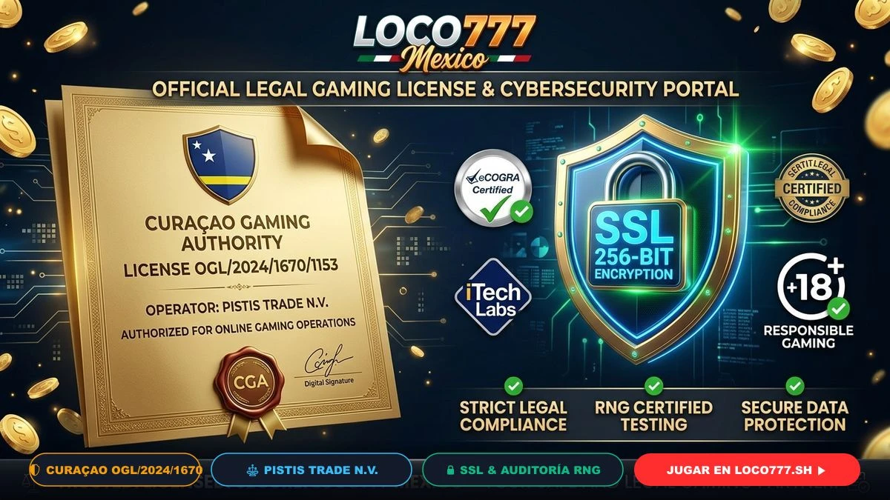

LOCO777 opera bajo un estricto marco de legalidad, transparencia y cumplimiento normativo internacional para ofrecer a los apostadores mexicanos una plataforma completamente protegida contra fraudes y manipulaciones. En un mercado digital donde la confianza es el activo más valioso, LOCO777 México destaca por hacer públicas todas sus acreditaciones jurídicas y técnicas.
Nuestra plataforma es operada por la prestigiosa firma Pistis Trade N.V., titular de la licencia oficial emitida por la Curaçao Gaming Authority con el número de registro OGL/2024/1670/1153. Esta certificación gubernamental asegura que todos los juegos de casino, cuotas deportivas y transacciones financieras se apegan a los más rigurosos estándares globales de la industria.
La licencia emitida por la Autoridad del Juego de Curaçao es uno de los reconocimientos regulatorios más prestigiosos y extendidos en la industria del juego digital a nivel mundial. Para obtener y conservar este permiso, LOCO777 se somete a inspecciones periódicas que evalúan:
Pistis Trade N.V. es una compañía registrada internacionalmente con una sólida trayectoria en el sector del juego en línea. Su liderazgo corporativo garantiza que LOCO777 cuente con el capital suficiente para pagar premios mayores de slots, botes acumulados de 10 Millones de Pesos y retiros diarios por SPEI sin demoras ni restricciones arbitrarias.
En el casino en línea LOCO777, ningún resultado está predeterminado ni manipulado. Cada máquina tragamonedas (como Fortune Gems o Charge Buffalo) opera mediante un Generador de Números Aleatorios (RNG - Random Number Generator).
Estos módulos matemáticos son auditados de manera independiente por firmas de prestigio global como eCOGRA y BMM Testlabs, asegurando que cada giro o reparto de cartas sea puramente estocástico y respete el porcentaje de Retorno al Jugador (RTP) declarado oficialmente por el desarrollador.
La protección de tus datos personales, contraseñas y transacciones bancarias en LOCO777 es gestionada mediante certificados criptográficos de última generación. Todo tráfico que fluye entre tu navegador y nuestros servidores viaja cifrado bajo el protocolo TLS 1.3 de 256 bits, impidiendo cualquier ataque de intermediario (Man-in-the-Middle) o robo de identidad.
El dinero de los usuarios en LOCO777 se gestiona en cuentas bancarias totalmente independientes de las cuentas operativas de la compañía. Esto significa que tu saldo depositado y tus ganancias siempre están resguardados y listos para ser retirados mediante SPEI en un lapso de 15 a 30 minutos sin importar las condiciones del mercado.
En concordancia con los principios rectores de la Secretaría de Gobernación (SEGOB) en los Estados Unidos Mexicanos, LOCO777 fomenta un ambiente de entretenimiento recreativo sano, libre de adicciones y socialmente responsable. Consulta nuestras herramientas de protección en la política de juego responsable de LOCO777.
El sello oficial de la Curaçao Gaming Authority con el número OGL/2024/1670/1153 se encuentra visible en el pie de página de nuestro portal oficial, permitiendo verificar en línea el estado activo de la licencia.
Sí, aplicamos estrictas políticas de confidencialidad y protección de datos, garantizando que tu información jamás sea vendida o compartida con agencias externas sin tu consentimiento expreso.
LOCO777 mantiene registros detallados de cada jugada en sus servidores. En caso de discrepancia, nuestro equipo de soporte e instancias auditoras independientes revisan el historial para garantizar una resolución justa.
Licencia oficial internacional, juegos auditados y pagos protegidos en toda la República Mexicana.
Unirse a LOCO777 OficialLOCO777.sh Oficial • Plataforma de Casino y Apuestas en México 2026 • Pistis Trade N.V. Licencia Curaçao OGL/2024/1670/1153